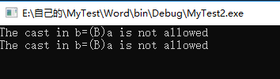

原文连接:https://www.cnblogs.com/xiaomowang/p/11948998.html
一、概述
1、通过反射可以提供类型信息，从而使得我们开发人员在运行时能够利用这些信息构造和使用对象
2、反射机制允许程序在执行过程中动态地添加各种功能
二、运行时类型标识
1、运行时类型标志（RTTI），可以在程序执行期间判断对象类型。例如使用他能够确切的知道基类引用指向了什么类型对象。
2、运行时类型标识，能预先测试某个强制类型转换操作，能否成功，从而避免无效的强制类型转换异常。
3、在C#中有三个支持RTTI的关键字：is、as、typeof。下面一次介绍他们
is运算符：
通过is运算符，能够判断对象类型是否为特定类型，如果两种类型时相同类型，或者两者之间存在引用，装箱拆箱转换，则表明两种类型时兼容的。代码如下：
1 static void Main()
2 {
3 A a = new A();
4 B b = new B();
5 if (a is A)
6 {
7 Console.WriteLine("a is an A");
8 }
9
10 if (b is A)
11 {
12 Console.WriteLine("b is an A because it is derived from");
13 }
14
15 if (a is B)
16 {
17 Console.WriteLine("This won't display,because a not derived from B");
18 }
19
20 if (a is object)
21 {
22 Console.WriteLine("a is an object");
23 }
24 Console.ReadKey();
25 }结果：
as运算符：
在运行期间执行类型转换，并且能够是的类型转换失败不抛出异常，而返回一个null值，其实as也可以看作一个is运算符的简化备选方式，如下：
1 static void Main()
2 {
3 A a = new A();
4 B b = new B();
5 if (a is B)
6 {
7 b = (B) a;//由于a变量不是B类型，因此这里将a变量转换为B类型时无效的
8 }
9 else
10 {
11 b = null;
12 }
13
14 if (b==null)
15 {
16 Console.WriteLine("The cast in b=(B)a is not allowed");
17 }
18 //上面使用as运算符，能够把两部分合二为一
19 b = a as B;//as运算符先检查将之转换类型的有效性，如果有效，则执行强类型转换过程，这些都在这一句话完成
20 if (b==null)
21 {
22 Console.WriteLine("The cast in b=(B)a is not allowed");
23 }
24 Console.ReadKey();
25 }结果：

typeof运算符：
as、is 能够测试两种类型的兼容性，但大多数情况下，还需要获得某个类型的具体信息。这就用到了typeof，他可以返回与具体类型相关的System.Type对象，通过System.Type对象可以去定此类型的特征。一旦获得给定类型的Type对象，就可以通过使用对象定义的各自属性、字段、方法来获取类型的具体信息。Type类包含了很多成元，在接下来的反射中再详细讨论。下面简单的演示Type对象，调用它的三个属性。
1 static void Main()
2 {
3 Type t = typeof(StringBuilder);
4 Console.WriteLine(t.FullName);//FullName属性返回类型的全称
5 if (t.IsClass)
6 {
7 Console.WriteLine("is a Class");
8 }
9
10 if (t.IsSealed)
11 {
12 Console.WriteLine("is Sealed");
13 }
14 Console.ReadKey();
15 }结果：

三、反射的核心类型：System.Type类
1、许多支持反射的类型都位于System.Reflection命名空间中，他们是.net Reflection API的一部分，所以再使用的反射的程序中一般都是要使用System.Reflection的命名空间。
2、System.Type类包装了类型，因此是整个反射子系统的核心，这个类中包含了很多属性和方法，使用这些属性和方法可以再运行时得到类型的信息。
3、Type类派生于System.Reflection.MemberInfo抽象类
|
MemberInfo类中的只读属性 |
|
|
属性 |
描述 |
|
Type DeclaringType |
获取声明该成员的类或接口的类型 |
|
MemberTypes MemberType |
获取成员的类型，这个值用于指示该成员是字段、方法、属性、事件、或构造函数 |
|
Int MetadataToken |
获取与特定元数据相关的值 |
|
Module Module |
获取一个代表反射类型所在模块（可执行文件）的Module对象 |
|
String Name |
成员的名称 |
|
Type ReflectedType |
反射的对象类型 |
请注意：
1、MemberType属性的返回类型为MemberTypes，这是一个枚举，它定义了用于表示不同成元的信息值，这些包括：MemberTypes.Constructor、MemeberTypes.Method、MemberTypes.Event、MemberTypes.Property。因此可以通过检查MemberType属性来确定成元的类型，例如在MenberType属性的值为MemberTypes.Method时，该成员为方法
2、MemberInfo类还包含两个与特性相关的抽象方法：
（1）GetCustomAttributes()：获得与主调对象相关的自定义特性列表。
（2）IsDefined()：确定是否为主调对象定义了相应的特性。
（3）GetCustomeAttributesData()：返回有关自定义特性的信息（特性稍后便会提到）
当然除了MemberInfo类定义的方法和属性外，Type类自己也添加了许多属性和方法：如下表（只列出一些常用的，太多二零，自己可以转定义Type类看一下）
|
Type类定义的方法 |
|
|
方法 |
功能 |
|
ConstructorInfo[] GetConstructors() |
获取指定类型的构造函数列表 |
|
EventInfo[] GetEvents(); |
获取指定类型的时间列 |
|
FieldInfo[] GetFields(); |
获取指定类型的字段列 |
|
Type[] GetGenericArguments(); |
获取与已构造的泛型类型绑定的类型参数列表，如果指定类型的泛型类型定义，则获得类型形参。对于正早构造的类型，该列表就可能同时包含类型实参和类型形参 |
|
MemberInfo[] GetMembers(); |
获取指定类型的成员列表 |
|
MethodInfo[] GetMethods(); |
获取指定类型的方法列表 |
|
PropertyInfo[] GetProperties(); |
获取指定类型的属性列表 |
下面列出Type类型定义的常用只读属性
|
Type类定义的属性 |
|
|
属性 |
功能 |
|
Assembly Assembly |
获取指定类型的程序集 |
|
TypeAttributes Attributes |
获取制定类型的特性 |
|
Type BaseType |
获取指定类型的直接基类型 |
|
String FullName |
获取指定类型的全名 |
|
bool IsAbstract |
如果指定类型是抽象类型，返回true |
|
bool IsClass |
如果指定类型是类，返回true |
|
string Namespace |
获取指定类型的命名空间 |
四、使用反射
上面将的这些，都是为了使用反射做铺垫的。
通过使用Type类定义的方法和属性，我们能够在运行时获得类型的各种具体信息。这是一个非常强大的功能，我们一旦得到类型信息，就可以调用其构造函数、方法、属性，可见，反射是允许使用编译时不可用的代码的。
由于Feflection API非常多，这里不可能完整的介绍他们（这里如果完整的介绍，据说要一本书，厚书）。但是Reflection API是按照一定逻辑设计的，因此，只要知道部分接口的使用方法，就可以举一反三的使用剩余的接口。
这里我列出四种关键的反射技术：
1、获取方法的信息
2、调用方法
3、构造对象
4、从程序集中加载类型
五、获取方法的相关信息
一旦有了Type对象就可以使用GetMethodInfo()方法获取此类型支持的所有方法列表。该方法返回一个MethodInfo对象数组，MethodInfo对象表述了主调类型所支持的方法，它位于System.Reflection命名空间中。MethodInfo类派生于MethodBase抽象类，而MethodBase类继承了MemberInfo类，因此，我们能够使用这三各类定义的属性和方法。例如，使用Name属性的到方法名，这里有两个重要的成员：
1、ReturnType属性：为Type类型的对象，能够提供方法的返回类型信息。
2、GetParameters()方法：返回参数列表，参数信息以数组的形式保存在PatameterInfo对象中。PatameterInfo类定义了大量表述参数信息的属性和方法，这里也累出两个常用的属性：Name（包含参数名称信息的字符串），ParameterType（参数类型的信息）。
下面代码我将使用反射获得类中的所支持的方法，还有方法的信息：
1 class Program
2 {
3 static void Main()
4 {
5 //获取描述MyClass类型的Type对象
6 Type t = typeof(MyClass);
7 Console.WriteLine($"Analyzing methods in {t.Name}");
8 //MethodInfo对象在System.Reflection命名空间下
9 MethodInfo[] mi = t.GetMethods();
10 foreach (var methodInfo in mi)
11 {
12 //返回方法的返回类型
13 Console.Write(methodInfo.ReturnType.Name);
14 //返回方法的名称
15 Console.Write($" {methodInfo.Name} (");
16 //获取方法阐述列表并保存在ParameterInfo对象组中
17 ParameterInfo[] pi = methodInfo.GetParameters();
18 for (int i = 0; i < pi.Length; i++)
19 {
20 //方法的参数类型名称
21 Console.Write(pi[i].ParameterType.Name);
22 //方法的参数名
23 Console.Write($" {pi[i].Name}");
24 if (i+1<pi.Length)
25 {
26 Console.Write(", ");
27 }
28 }
29
30 Console.Write(")");
31 Console.Write("\r\n");
32 Console.WriteLine("--------------------------");
33 }
34 Console.ReadKey();
35 }
36 }
37
38 class MyClass
39 {
40 private int x;
41 private int y;
42
43 public MyClass()
44 {
45 x = 1;
46 y = 1;
47 }
48
49 public int Sum()
50 {
51 return x + y;
52 }
53
54 public bool IsBetween(int i)
55 {
56 if (x < i && i < y)
57 {
58 return true;
59 }
60
61 return false;
62 }
63
64 public void Set(int a, int b)
65 {
66 x = a;
67 y = b;
68 }
69
70 public void Set(double a, double b)
71 {
72 x = (int)a;
73 y = (int)b;
74 }
75
76 public void Show()
77 {
78 System.Console.WriteLine($"x:{x},y:{y}");
79 }
80 }输出结果：
注意：这里输出的除了MyClass类定义的所有方法外，也会显示object类定义的共有非静态方法。这是因为C#中的所有类型都继承于Object类。另外，这些信息是在程序运行时动态获得的，并不需要知道MyClass类的定义
GetMethods()方法的另一种形式
这种形式可以指定各种标记，已筛选想要获取的方法，他的通用形式为：MethodInfo[] GetMethods(BindingFlags bindingAttr)
BindingFlags是一个枚举，枚举值有（很多，这里只列出5个常用的吧）
（1）DeclareOnly：仅获取指定类定义的方法，而不获取所继承的方法
（2）Instance：获取实例方法
（3）NonPublic：获取非公有方法
（4）Public：获取共有方法
（5）Static：获取静态方法
GetMethods(BindingFlags bindingAttr)这个方法，参数可以使用 or 把两个或更多标记连接在一起，实际上至少要有Instance（或 Static）与Public（或 NonPublic）标记，否则将不会获取任何方法。下我们就写一个示例来演示一下。
1 class Program
2 {
3 static void Main()
4 {
5 //获取描述MyClass类型的Type对象
6 Type t = typeof(MyClass);
7 Console.WriteLine($"Analyzing methods in {t.Name}");
8 //MethodInfo对象在System.Reflection命名空间下
9 //不获取继承方法，为实例方法，·为公用的
10 MethodInfo[] mi = t.GetMethods(BindingFlags.DeclaredOnly|BindingFlags.Instance|BindingFlags.Public);
11 foreach (var methodInfo in mi)
12 {
13 //返回方法的返回类型
14 Console.Write(methodInfo.ReturnType.Name);
15 //返回方法的名称
16 Console.Write($" {methodInfo.Name} (");
17 //获取方法阐述列表并保存在ParameterInfo对象组中
18 ParameterInfo[] pi = methodInfo.GetParameters();
19 for (int i = 0; i < pi.Length; i++)
20 {
21 //方法的参数类型名称
22 Console.Write(pi[i].ParameterType.Name);
23 //方法的参数名
24 Console.Write($" {pi[i].Name}");
25 if (i+1<pi.Length)
26 {
27 Console.Write(", ");
28 }
29 }
30
31 Console.Write(")");
32 Console.Write("\r\n");
33 Console.WriteLine("--------------------------");
34 }
35 Console.ReadKey();
36 }
37 }
38
39 class MyClass
40 {
41 private int x;
42 private int y;
43
44 public MyClass()
45 {
46 x = 1;
47 y = 1;
48 }
49
50 public int Sum()
51 {
52 return x + y;
53 }
54
55 public bool IsBetween(int i)
56 {
57 if (x < i && i < y)
58 {
59 return true;
60 }
61
62 return false;
63 }
64
65 public void Set(int a, int b)
66 {
67 x = a;
68 y = b;
69 }
70
71 public void Set(double a, double b)
72 {
73 x = (int)a;
74 y = (int)b;
75 }
76
77 public void Show()
78 {
79 System.Console.WriteLine($"x:{x},y:{y}");
80 }
81 }输出结果：
上面例子可以看出，只显示了MyClass类显示定义的方法，private int Sum() 也不显示了
六、使用反射调用方法
上面我们通过反射获取到了类中的所有信息，下面我们就再使用反射调用反射获取到的方法。要调用反射获取到的方法，则需要在MethodInfo实例上调用Invoke()方法，Invoke()的使用，在下面例子中演示说明：
下面例子是先通过反射获取到要调用的方法，然后使用Invoke()方法，调用获取到的指定方法：
1 class Program
2 {
3 static void Main()
4 {
5 //获取描述MyClass类型的Type对象
6 Type t = typeof(MyClass);
7 MyClass reflectObj = new MyClass();
8 reflectObj.Show();
9 //不获取继承方法，为实例方法，·为公用的
10 MethodInfo[] mi = t.GetMethods(BindingFlags.DeclaredOnly | BindingFlags.Instance | BindingFlags.Public);
11 foreach (var methodInfo in mi)
12 {
13
14 //获取方法阐述列表并保存在ParameterInfo对象组中
15 ParameterInfo[] pi = methodInfo.GetParameters();
16 if (methodInfo.Name.Equals("Set", StringComparison.Ordinal) && pi[0].ParameterType == typeof(int))
17 {
18 object[] args = new object[2];
19 args[0] = 9;
20 args[1] = 10;
21 methodInfo.Invoke(reflectObj,args);
22 }
23 }
24 Console.ReadKey();
25 }
26 }
27
28 class MyClass
29 {
30 private int x;
31 private int y;
32
33 public MyClass()
34 {
35 x = 1;
36 y = 1;
37 }
38
39 public int Sum()
40 {
41 return x + y;
42 }
43
44 public bool IsBetween(int i)
45 {
46 if (x < i && i < y)
47 {
48 return true;
49 }
50
51 return false;
52 }
53
54 public void Set(int a, int b)
55 {
56 x = a;
57 y = b;
58 Show();
59 }
60
61 private void Set(double a, double b)
62 {
63 x = (int)a;
64 y = (int)b;
65 }
66
67 public void Show()
68 {
69 System.Console.WriteLine($"x:{x},y:{y}");
70 }
71 }获取Type对象的构造函数
这个之前的阐述中，由于MyClass类型的对象都是显示创建的，因此使用反射技术调用MyClass类中的方法是没有任何优势的，还不如以普通方式调用方便简单呢，但是，如果对象是在运行时动态创建的，反射功能的优势就会显现出来。在这种情况下，要先获取一个构造函数列表，然后调用列表中的某个构造函数，创建一个该类型的实例，通过这种机制，可以在运行时实例化任意类型的对象，而不必在声明语句中指定类型。
示例代码如下：
1 class Program
2 {
3 static void Main()
4 {
5 //获取描述MyClass类型的Type对象
6 Type t = typeof(MyClass);
7 int val;
8 //使用这个方法获取构造函数列表
9 ConstructorInfo[] ci = t.GetConstructors();
10 int x;
11 for (x = 0; x < ci.Length; x++)
12 {
13 //获取当构造参数列表
14 ParameterInfo[] pi = ci[x].GetParameters();
15 if (pi.Length == 2)
16 {
17 //如果当前构造函数有2个参数，则跳出循环
18 break;
19 }
20 }
21
22 if (x == ci.Length)
23 {
24 return;
25 }
26 object[] consArgs = new object[2];
27 consArgs[0] = 10;
28 consArgs[1] = 20;
29 //实例化一个这个构造函数有连个参数的类型对象，如果参数为空，则为null
30
31 object reflectOb = ci[x].Invoke(consArgs);
32
33 MethodInfo[] mi = t.GetMethods(BindingFlags.DeclaredOnly | BindingFlags.Instance | BindingFlags.Public);
34 foreach (var methodInfo in mi)
35 {
36 if (methodInfo.Name.Equals("Sum", StringComparison.Ordinal))
37 {
38 val = (int)methodInfo.Invoke(reflectOb, null);
39 Console.WriteLine($"Sum is {val}");
40 }
41 }
42 Console.ReadKey();
43 }
44 }
45
46 class MyClass
47 {
48 private int x;
49 private int y;
50
51 public MyClass(int i)
52 {
53 x = y + i;
54 }
55
56 public MyClass(int i, int j)
57 {
58 x = i;
59 y = j;
60 }
61
62 public int Sum()
63 {
64 return x + y;
65 }
66 }输出结果：
七、从程序集获得类型
在这之前的阐述中可以看出一个类型的所有信息都能够通过反射得到，但是MyClass类型本身，我们却没有做到获取，虽然前面的阐述实例，可以动态确定MyClass类的信息，但是他们都是基于以下事实：预先知道类型名称，并且在typeof与剧中使用它获得Type对象。尽管这种方式可能在很多情况下都管用，但是要发挥反射的全部功能，我们还需要分析反射程序集的内容来动态确定程序的可用类型。
借助Reflection API，可以加载程序集，获取它的相关信息并创建其公共可用类型的实例，通过这种机制，程序能够搜索其环境，利用潜在的功能，而无需再编译期间显示的定义他们，这是一个非常有效且令人兴奋的概念。为了说明如何获取程序集中的类型，我创建了两个文件，第一个文件定义一组类，第二个文件则反射各个类型的信息。代码效果如下：
1、这下面代码编译生成MyTest2_C.exe文件
1 class Program
2 {
3 static void Main(string[] args)
4 {
5 Console.WriteLine("Hello word !");
6 Console.ReadKey();
7 }
8 }
9
10 class MyClass
11 {
12 private int x;
13 private int y;
14
15 public MyClass(int i)
16 {
17 x = y + i;
18 }
19
20 public MyClass(int i, int j)
21 {
22 x = i;
23 y = j;
24 }
25
26 public int Sum()
27 {
28 return x + y;
29 }
30 }2、这下面的代码时获取上面生成程序集的
1 class Program
2 {
3 static void Main()
4 {
5 //加载指定的程序集
6 Assembly asm = Assembly.LoadFrom(@"E:\自己的\MyTest\MyTest2_C\bin\Debug\MyTest2_C.exe");
7 //获取程序集中的所有类型列表
8 Type[] allType = asm.GetTypes();
9 foreach (var type in allType)
10 {
11 //打印出类型名称
12 Console.WriteLine(type.Name);
13 }
14
15 Console.ReadKey();
16 }
17 }输出结果：
上面获取到了程序集中的类型，如果像操作程序集类型中的方法，则跟前面我们表述的方法一样操作即可。
好了，.Net反射我们就介绍到这里啦~